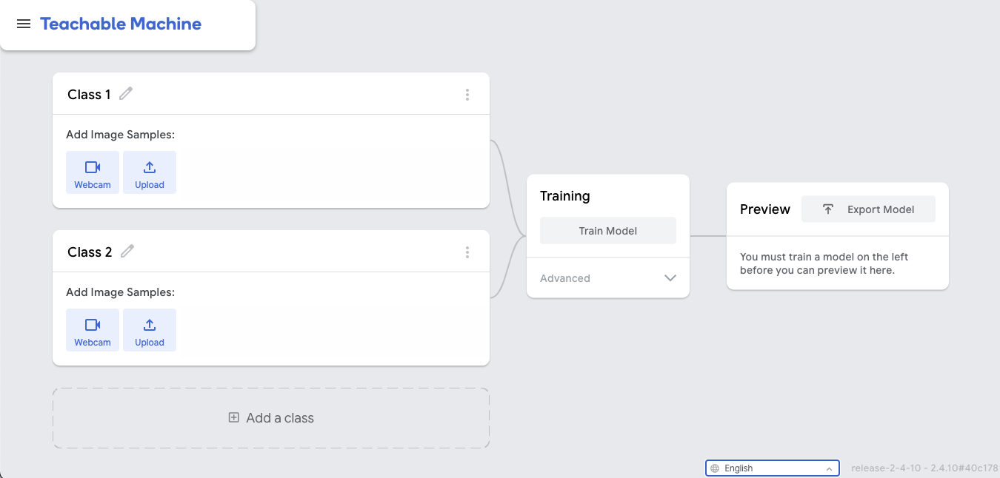

Activitat grupal
En aquest exercici, crearem un model que pugui prendre una imatge i determinar si aquesta imatge és d'un gat o d'un gos. Per fer-ho utilitzarem l'eina Teachable Machine.
Entreu a Teachable Machine. Hauríeu de veure una pàgina com aquesta:

Per tal que el nostre model funcioni correctament, hem d'alimentar-lo amb dades que classifiquen determinades imatges com a gats i altres com a gossos.
- A la classe 1, puja AQUESTES imatges i canviar el nom de la classe per gat.
- A la classe 2, puja AQUESTES imatges i canviar el nom de la classe a gos.
Un cop hàgiu afegit les dades d'entrenament correctes, feu clic al botó Train Model. Això entrenarà el model per classificar noves imatges com a gat o gos a partir de les imatges existents. Podeu fer clic a la configuració avançada per veure els hiperparàmetres amb què es realitzarà l'entrenament.
Quan el programa s'ha entrenat, és hora de provar la qualitat del model de classificació.
Carregueu cadascun d'AQUESTES imatges de prova al model. Utilitzeu el menú desplegable per definir el tipus d'entrada com a fitxer en lloc de la càmera web. Només podreu provar una imatge alhora.
Part 1 - Contesteu les preguntes següents en un document:
- El model és precís?
- Per què o per què no?
- Per a quines imatges és exacte?
Ara afegiu AQUESTES imatges a les mostres d'imatges de gossos. Ara, hi hauria d'haver 10 imatges de balenes i 10 imatges de peixos!
Part 2 - Torneu a executar el model d'entrenament amb les dades noves. Ara, proveu de pujar les imatges de prova a l'algorisme i contesta les preguntes en l'anterior document i pugeu-lo a la tasca del Classroom.
- Els resultats eren diferents?
- En traieu alguna conclusió?